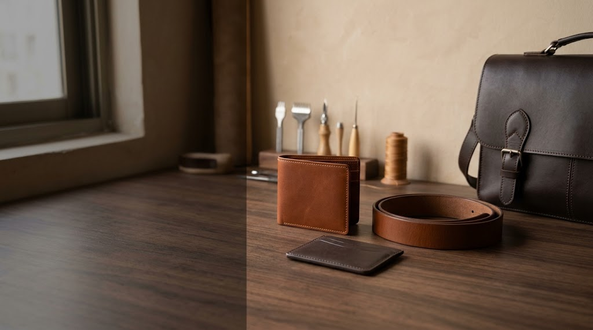
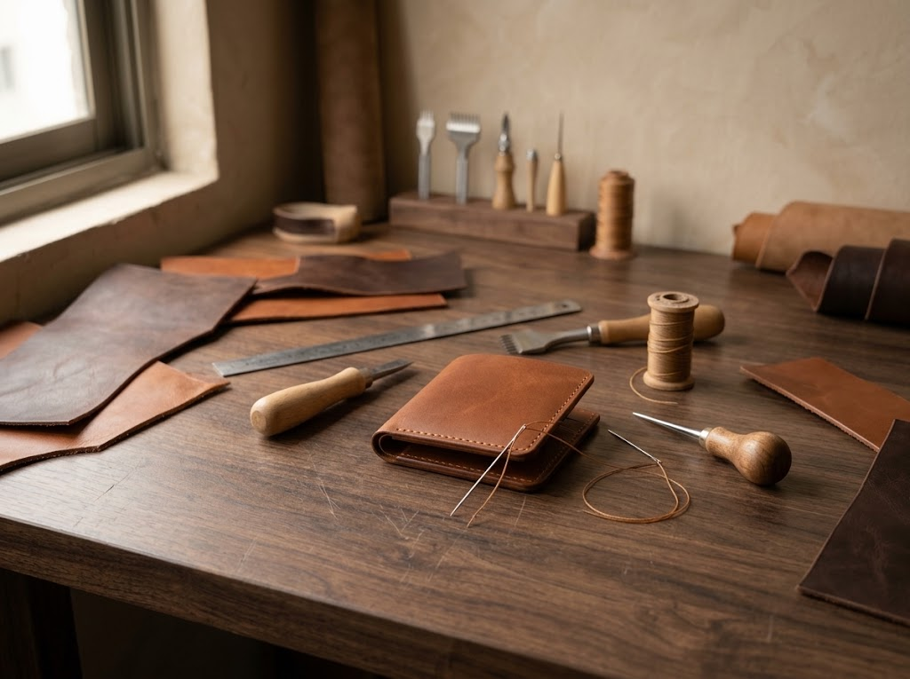

↗
↗Classic Leather Wallet
A compact everyday essential with a clean, timeless profile.
Enquire about this piece →
MATERIAL. DETAIL. CRAFT.
Leather goods shaped by thoughtful design, careful finishing, and an appreciation for materials that grow more characterful with time.
THE MATERIAL, FIRST
Leather has a language of its own: grain, texture, weight, and the marks that make each hide distinctive. Perfect Leather brings that material to the centre of a considered range of leather goods.
Explore the craft ↗THE COLLECTION
↗A compact everyday essential with a clean, timeless profile.
Enquire about this piece → ↗
↗A versatile silhouette for daily routines and considered travel.
Enquire about this piece → ↗
↗A dependable wardrobe staple with understated character.
Enquire about this piece →
DETAIL IS THE DIFFERENCE
From the selection of materials to the final edge and stitch, each stage contributes to the feel and function of a leather piece. Explore common techniques behind leather craftsmanship.
See the process ↗